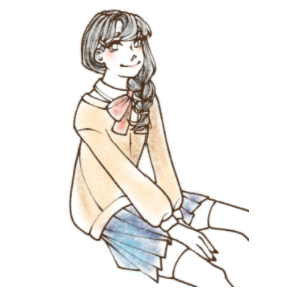

Entry 4: Clothes

Clothes
During quarantine, I began to miss several of the activities I previously disliked, such as shopping casually for clothes. Online shopping exists, but I miss being able to feel the fabric from the clothes I’m interested in and hunt for interesting-looking tags. Even if I could go out and shop, I would be swarmed with sweaters and coats due to the seasons changing and the temperature dropping. I couldn’t believe it when a friend of mine said it was snowing heavily in Montana. I miss the warmer weather and being able to swear skirts or shorts. Jeans sometimes feel pretty limiting. I can only look forward to next summer!